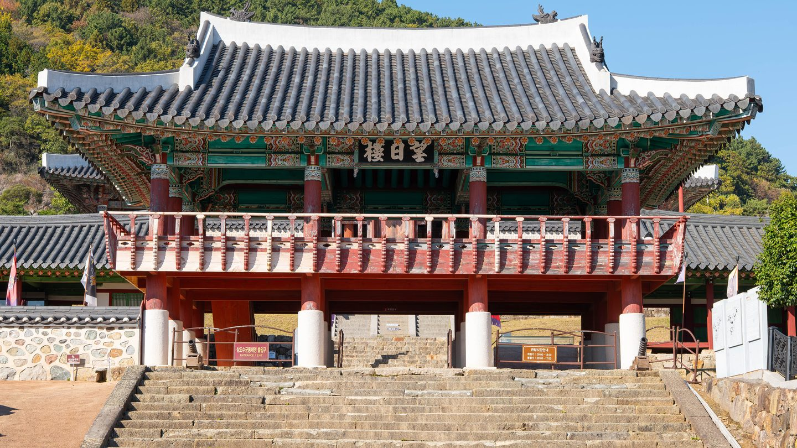
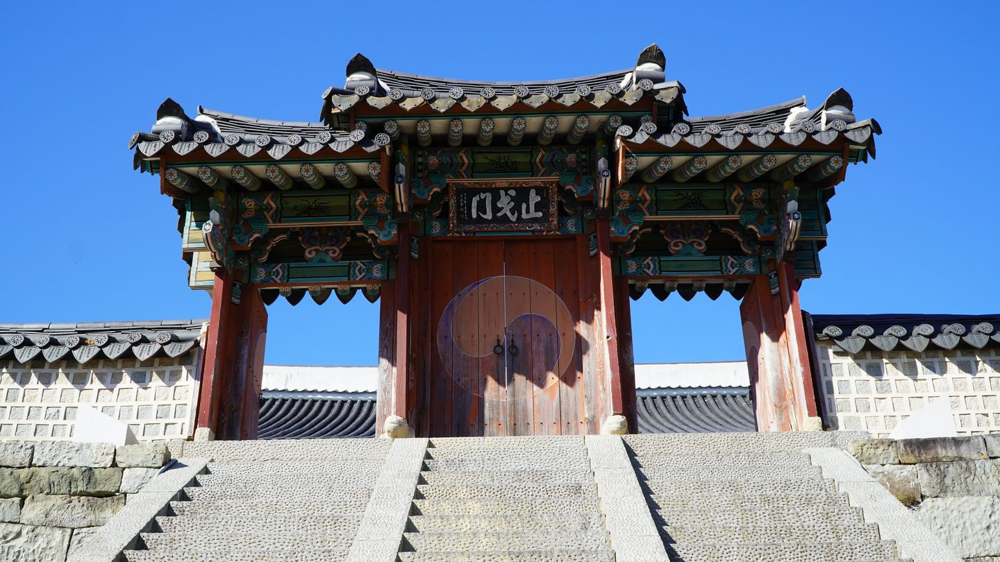
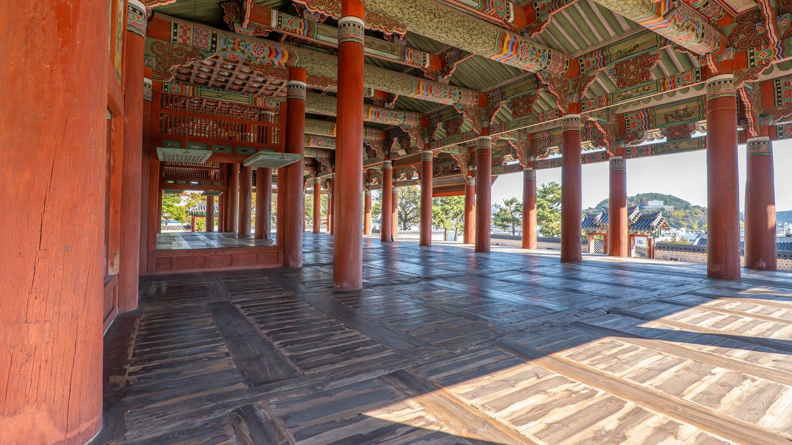

The Gate That Stops the Spear, the Hall That Washes the Weapons: Dreaming of Peace
From Mangillu to Sebyeonggwan: reading Tongjeyeong through its names

Front view of Mangillu Pavilion
A walk through Tongjeyeong is a journey past one building after another, but it is also a journey through the names given to each space. Past the ticket office, you come to Mangillu Pavilion. Climb the steps and pass through Jigwamun Gate, and Sebyeonggwan, the main hall of Tongjeyeong, comes into view. The three lie along a single route, yet each shows a different side of the military base.
The path linking the three sites
①Mangillu PavilionEntrance pavilion
②Jigwamun GateGate at the top of the steps
③Sebyeonggwan HallMain hall, once the official guesthouse
Mangillu is the pavilion that greets you on the way into Tongjeyeong. You pass through it into the inner grounds. The route through gates, up steps and across courtyards also takes you from the street outside into the military base itself. Today, Mangillu is where the visit begins, and as you follow the path, it becomes clear that Tongjeyeong was a base made up of many interconnected buildings and spaces.
① Mangillu Pavilion to ② Jigwamun Gate

Jigwamun Gate and its steps
Beyond Mangillu Pavilion, up the steps, stands Jigwamun (止戈門) Gate. The first two characters of its name, ji (止) and gwa (戈), mean “to stop” and “spear.” Together they mean “stop the spear,” so Jigwamun can be read as “the gate that stops the spear.”
Reading the name · 止戈
止Ji · to stop
+
戈Gwa · spear
=
止戈To stop the spear
Zuo Zhuan: Jigwawimu (止戈爲武) — True martial strength lies in stopping the spear
The phrase also goes back to a classical text. The Zuo Zhuan contains the line “jigwawimu (止戈爲武)”: “True martial strength lies in stopping the spear.” This reading locates martial strength not merely in war and displays of force, but in laying down arms and ending violence. With this line in mind, it becomes easier to see why the gate of a military base was given a name meaning “stop the spear.”
Of course, the name cannot be taken to mean that there was no war. Tongjeyeong was, after all, a place for commanding naval forces and maintaining military strength. Still, the name Jigwamun suggests that even a base devoted to military force could carry a wish to bring war to an end. Keeping weapons ready and commanding troops need not be at odds with hoping for peace.
When you reach Jigwamun, look up at the gate from the foot of the steps, then follow the path beyond it to Sebyeonggwan. As you pass through, consider how this one gate connects the spaces you are exploring, and how its name, “stop the spear,” relates to this place.
③ Sebyeonggwan: drawing down the Milky Way to wash the weapons

Inside Sebyeonggwan Hall
Pass through Jigwamun Gate, and Sebyeonggwan (洗兵館) Hall rises before you. Once the official guesthouse of Tongjeyeong, the hall was first built in 1605, rebuilt on a larger scale in 1646 and renovated in 1872. A single-story building with a hip-and-gable roof, nine bays wide and five bays deep, it was designated a National Treasure on October 14, 2002. The wide, open wooden floor, the thick columns and a space left unbroken by walls or windows clearly show the building’s scale and structure.
What strikes you first at Sebyeonggwan is its size. Step inside and there are almost no walls to block the view; the floor stretches wide, and row upon row of columns creates a sense of depth. At the center, a raised platform is set apart from the rest of the floor. Notice how, even within such a broad, open structure, a change in height sets up a hierarchy between the center and the space around it.
Conceptual floor plan of Sebyeonggwan
Raised platform
Front: 9 bays
Side: 5 bays
1605First built
1646Rebuilt larger
1872Renovated
2002Designated a National Treasure
A conceptual diagram of the bays and their relation to the raised platform. It does not reflect the actual column layout or the size of the platform.
The name Sebyeonggwan carries another story. Sebyeong (洗兵) means “to wash weapons.” The name is said to come from the final lines of the Tang poet Du Fu’s “Sebyeongma” (洗兵馬, “Washing Weapons and Horses”).
安得壯士挽天河，淨洗甲兵長不用
If only a hero could be found to draw down the Milky Way and wash the armor and weapons clean, never to be used again.
Du Fu longed for the Milky Way to be drawn down to wash the weapons, and for a world where they would never be needed again. Read alongside this poem, the name Sebyeonggwan becomes more than a label for a military building; it speaks of the hope for a day when war would end and weapons could be laid down.
If Jigwamun is “the gate that stops the spear,” Sebyeonggwan is “the hall that washes the weapons.” The two names belong to different buildings, yet together they show that a base devoted to military force also held a wish to end war and live in peace.
Two names, one wish
止戈門Jigwamun GateThe gate that stops the spearZuo Zhuan: jigwawimu (止戈爲武)
洗兵館Sebyeonggwan HallThe hall that washes the weaponsDu Fu, “Sebyeongma” (“Washing Weapons and Horses”)
The wish to end war and live in peace
What to look for inside the hall
Central platform and ceiling details
At Sebyeonggwan, the details inside deserve a slow, careful look just as much as the building’s size does. At the center is the platform where the wooden tablet representing the king was enshrined. It is also called the Gwolpaedan, and on the first and fifteenth days of each month officials are said to have paid their respects to the king here. This was more than a wide floor: within the base, it was a place that stood for royal authority and where ceremony was observed.
The paintings on the ceiling and wall panels are also worth noticing. Lotus flowers, cranes and peaches are painted on the ceiling, and the wall panels show military scenes and a turtle ship. Pick out these details one by one, and you will come to know Sebyeonggwan more deeply.
Turtle ship in the wall painting
Please take off your shoes before stepping onto the floor and follow the on-site guidance for protecting cultural heritage. Rather than hurrying through, look at the space opening out between the columns, then let your eyes move to the central platform, the ceiling and the wall panels. Sebyeonggwan is a large building to admire from a distance, and also a place that tells more stories the closer you look.
The path from Mangillu through Jigwamun to Sebyeonggwan is short, but each building has its own role and meaning. Walk it knowing what the names mean, and the gates and buildings become not just points to pass through but spaces that hold the history and ideas of Tongjeyeong.
“Pass through the gate that stops the spear, and you arrive at the hall that draws down the Milky Way to wash the weapons.”
통영,세병관에서 12공방까지Tongyeong, From Sebyeonggwan Hall to the 12 Workshops
Visitor route · Ticket office to the History Museum
Workshop route · Sebyeonggwan to Yajangbang
From Sebyeonggwan, enter the workshop street behind it and visit 04 Seonjabang through 16 Yajangbang in order. This diagram shows the order of the stops, not the actual layout of the buildings. Tap a number to read its story.